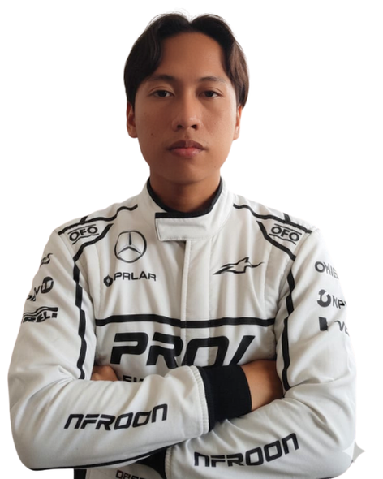
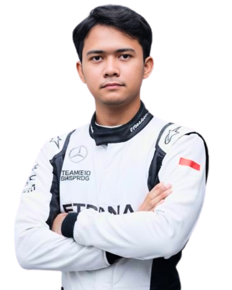
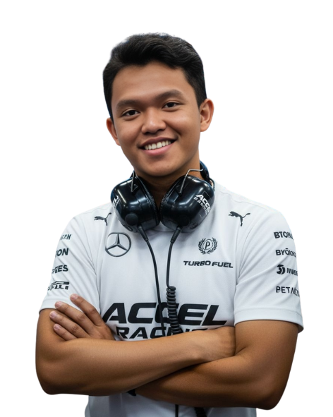
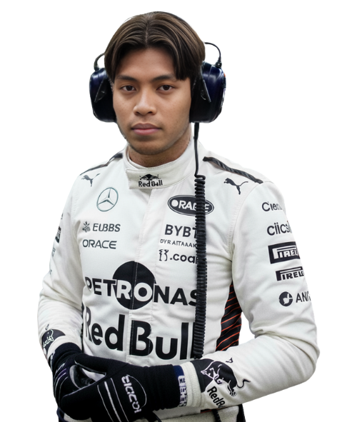
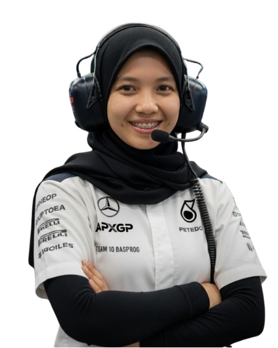
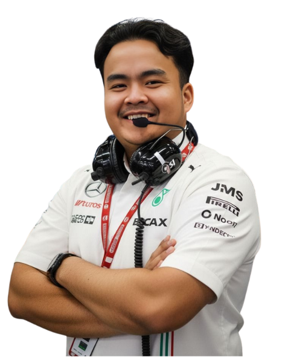

Pembalap Formula 1 profesional dengan tiga kali juara dunia F1 (2021, 2023, 2024). Dikenal karena gaya balap agresif namun cerdas, kemampuan membaca strategi, serta konsistensi luar biasa dalam kondisi tekanan tinggi. Ahli dalam memberikan umpan balik teknis mendalam kepada insinyur untuk mengoptimalkan performa mobil. Pemimpin alami di lintasan dengan reputasi sebagai pembalap cepat, disiplin, dan kompetitif.

Pembalap muda berbakat dan juara dunia FIA Formula 2 2024, kini memulai debut di Formula 1 bersama X F1 team untuk musim 2025. Dikenal karena kecepatan satu putaran yang luar biasa, kemampuan menyalip agresif namun bersih, serta kecerdasan balap tinggi dalam manajemen ban dan strategi. Memiliki reputasi sebagai talenta masa depan dengan dedikasi kuat, kedisiplinan fisik, dan kemampuan komunikasi teknis yang matang untuk ukuran rookie.

Insinyur otomotif berpengalaman lebih dari 15 tahun di dunia motorsport, dengan 7 tahun terakhir sebagai Technical Director di tim Formula 1 papan atas. Memiliki keahlian mendalam dalam aerodinamika, desain sasis, integrasi power unit, dan manajemen proyek teknis berskala besar. Berhasil memimpin tim multidisiplin untuk mengembangkan mobil kompetitif yang meraih podium dan kemenangan Grand Prix. Terbiasa bekerja di bawah tekanan tinggi, mengelola anggaran teknis sesuai regulasi FIA, dan mendorong inovasi berkelanjutan dalam batas cost cap.

Lead Mechanic dengan lebih dari 10 tahun pengalaman di dunia motorsport, termasuk 6 tahun di Formula 1. Memiliki keahlian tinggi dalam perakitan, pemeliharaan, dan penyiapan mobil balap F1 di bawah tekanan waktu yang ketat. Terbukti mampu memimpin kru mekanik di garasi dan memastikan setiap komponen mobil siap balap sesuai standar FIA dan instruksi Race Engineering. Berpengalaman bekerja langsung dengan pembalap dan insinyur untuk menjaga performa serta keandalan mobil selama race weekend.

Race & Strategy Engineer dengan lebih dari 8 tahun pengalaman di Formula 1, berfokus pada analisis performa, perencanaan strategi balap, dan pengambilan keputusan real-time selama Grand Prix. Berpengalaman dalam memanfaatkan data telemetry, simulasi balapan, dan prediksi cuaca untuk menentukan strategi pit stop, pemilihan ban, serta manajemen energi. Terbiasa bekerja langsung dengan pembalap, race engineer, dan kepala strategi untuk memaksimalkan hasil tim di lintasan.
Eksekutif senior dengan lebih dari 20 tahun pengalaman di industri otomotif dan motorsport, termasuk 10 tahun di posisi eksekutif puncak Formula 1. Memiliki rekam jejak dalam memimpin tim F1 menuju keberhasilan kompetitif dan finansial, membangun kemitraan global bernilai tinggi, serta mengelola operasi lintas departemen—dari teknik, komersial, hingga komunikasi publik. Dikenal sebagai pemimpin visioner dengan kemampuan menggabungkan strategi bisnis dan performa teknis untuk memastikan keberlanjutan dan kesuksesan tim di level tertinggi balap dunia.

Pemimpin tim Formula 1 berpengalaman dengan lebih dari 15 tahun di dunia motorsport dan manajemen teknis. Dikenal karena kemampuan dalam menggabungkan kepemimpinan strategis, manajemen teknis, dan pengembangan pembalap untuk mencapai performa puncak di lintasan maupun di luar lintasan. Berhasil membawa tim menuju kemenangan Grand Prix dan posisi teratas klasemen konstruktor melalui budaya kerja kolaboratif, efisiensi operasional, serta fokus kuat pada inovasi dan hasil.